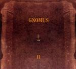

Home Artist links Label link

Gnomus - II
| Artist: | Gnomus |
| Title: | II |
| Label: | Fiasko Records FRCD-17 |
| Length(s): | 49 minutes |
| Year(s) of release: | 2004 |
| Month of review: | [10/2004] |
Line up
Mike Kallio - drums
Kari Ikonen - keyboards
Esa Onttonen - guitar
Tracks
| 1) | Sirens | 22.59
|
| 2) | Hypnos | 10.03
|
| 3) | Trauma | 15.55
|
Summary
This improvising trio from Finland releases a live album as their second
effort.
The music
Sirens is the mile long opener, almost 23 minutes. The opening is sparse,
very spacey and cosmic. The music has resemblances both to Ravel's Bolero,
Floyd's Pompeii side, and Robert Fripp's solo works on guitar. The music is extremely
ethereal with the drums going lightly and percussively in the back.
The strength lies in the build up and the atmospheres being evoked
and they do in fact do a good job. Later on the bass also has its place
evoking the likes of Roger Waters in early Floyd. Strangely, the bass is not
mentioned as an instrument, so this may be the guitar with some very low
tuning. In addition to the bass, vocoded vocals are inserted in to the music
to harry us a bit. The Floyd becomes more noticeable in a way, although the
guitar has the anger of Fripp's improvisation in KC. In fact, only the
strong keyboard presence deviates from the impression that we hear
KC during the early seventies here. Tense stuff, and not very friendly
on the ears sometimes.
Hypnos has hypnotically repeated vocal parts and a somber feel, a bit
of a ceremonial burial feel. Part halfway the pace comes into the music
a bit more, and the synths start to rumble. The drum approacj is quite
jazzy.
Trauma is another slowly building piece with droning guitars and discordant
keyboards.
Conclusion
These are mature improvisers, connecting well in the moods they evoke.
The songs are all long, spun out, with a bit of melody and plenty
of tension. At times the music can be difficult to appreciate, having
some rather sharp edges. I do not like them less for it, though.
The main reference would be King Crimson in their improv days, with
a bit of Floyd/Space Rock thrown in for good measure, and sometimes
a strong dose of (dissonant) keyboards.
© Jurriaan Hage